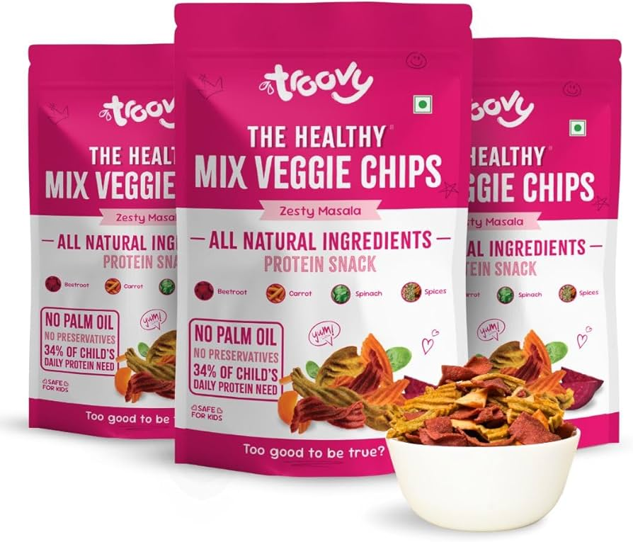

troovy chips are line of healthy,baked snacks marketed as a nutritious,high- protein alternative to traditional fried chips.They are made from natural ingredients like makhana,veggies(beetroot,spanish,carrot).and lentils,with no palm oil,preservaties,or gluten,targeting children and health-conscious consumers.

Try new verison of chips which is healthy and full of nutrients.You can also try different flavours of Chips,Sauces & Spreads,Pastas